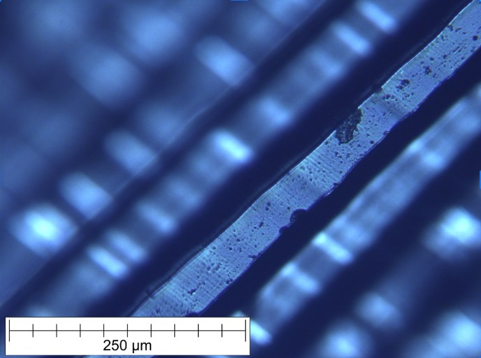

Projects

A Deeper Look at Face Masks
To learn more about single use plastics, I worked on a team of four people to compare KN95 masks with typical 4 ply blue masks. We looked at the microstructure of each layer and performed an experiment to see how much fiber each type of mask sheds. We used FTIR to determine the composition of each layer of both masks, and SEM with EDS analysis to look at the filter that caught the fibers shed by the masks. To refine our FTIR results, we also used DSC thermal testing to identify the plastic fiber.

History of Penny Materials
Using optical microscopes and XRF, we dove into the materials that make up pennies. We specifically looked at the material difference between pre-1982 and post-1982 pennies, when the US Mint switched from copper-zinc alloy to copper plated zinc. This project deepened my knowledge of grain boundaries, phase diagrams, and electroplating.

Material and Cultural Significance of Vinyl Records
For my final project in Materials, Creation, Comsumption, and Impact, I learned about the materials behind and cultural significance of vinyl records over time. I used FTIR and XRF to attempt to identify the PVC additives used in vinyl records, and composed research about the development of this technology over time, how the product is made today, and what the impact of using PVC is on human health and the environment.